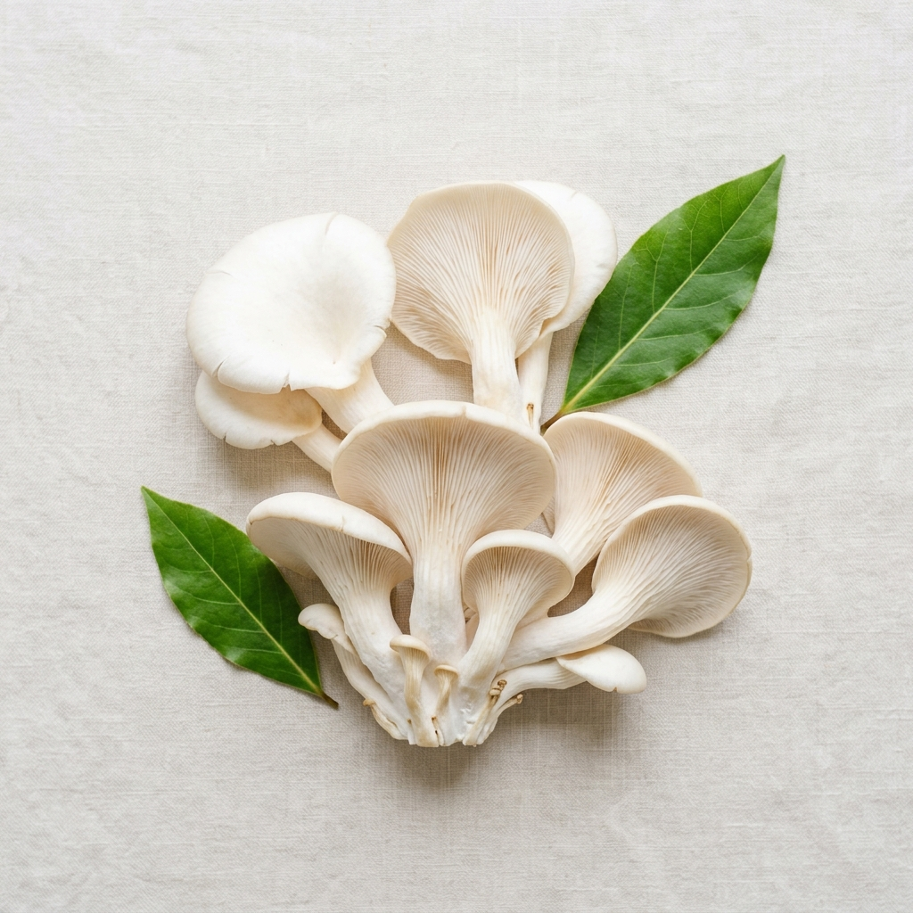

Perjalanan Tirami
Membawa kebaikan jamur ke meja makan Anda, dengan rasa yang tak terlupakan dan kualitas terjamin.
Inovasi Sehat
Berawal
dari Alam
Tirami didirikan di Indonesia dengan satu tujuan sederhana: membuat makanan sehat yang juga lezat. Kami memahami bahwa banyak orang kesulitan mencari alternatif plant-based (nabati) yang benar-benar menggugah selera.
Oleh karena itu, kami memanfaatkan jamur tiram pilihan yang kaya serat. Jamur tiram dikenal memiliki tekstur unik berserat mirip daging ayam, namun jauh lebih sehat, rendah lemak, dan sangat ramah lingkungan dalam proses penanamannya.
Proses produksi kami di pabrik modern menggunakan teknologi canggih untuk menjaga nutrisi jamur dan menciptakan lapisan tepung renyah (kriuk) yang sempurna. Kami percaya bahwa setiap gigitan Tirami memberikan kebahagiaan bagi Anda sekeluarga, tanpa rasa bersalah.

Visi Kami
Menjadi pelopor produk makanan olahan lezat berbasis nabati di Indonesia yang mendukung gaya hidup sehat, praktis, dan berkelanjutan bagi semua generasi, tanpa kompromi pada rasa.
Misi Kami
Menyediakan produk olahan
jamur premium yang kaya nutrisi dan dijangkau semua kalangan.
Memperkenalkan pentingnya
menjaga lingkungan melalui revolusi pilihan makanan berbahan nabati.
Terus berinovasi secara
berkelanjutan untuk menghasilkan varian rasa yang memanjakan lidah.